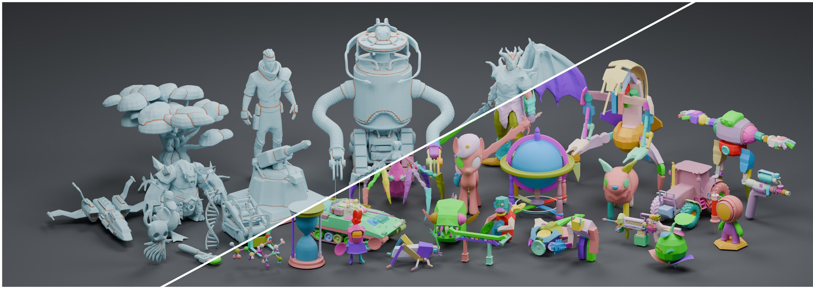
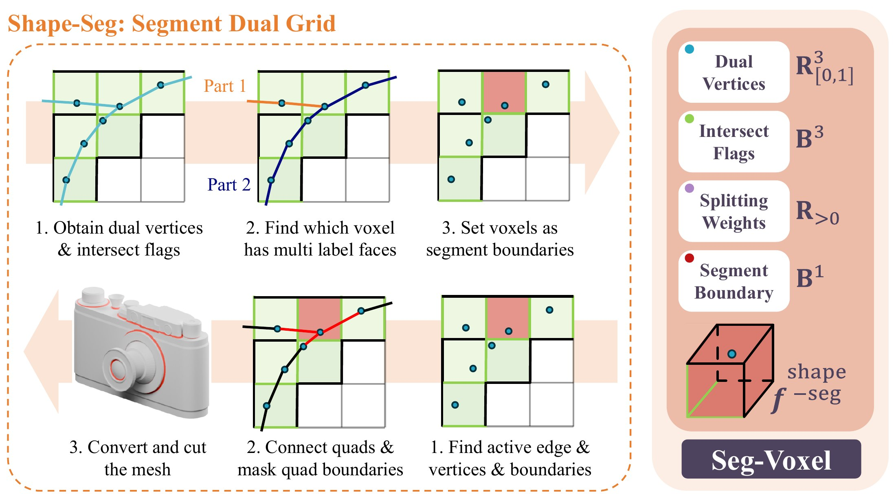
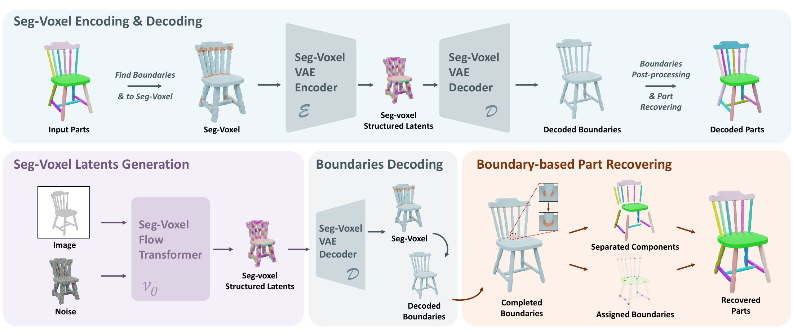
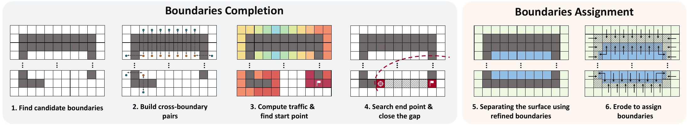
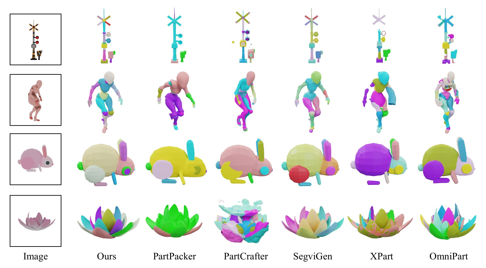
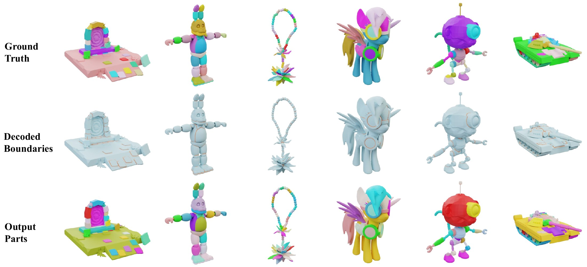
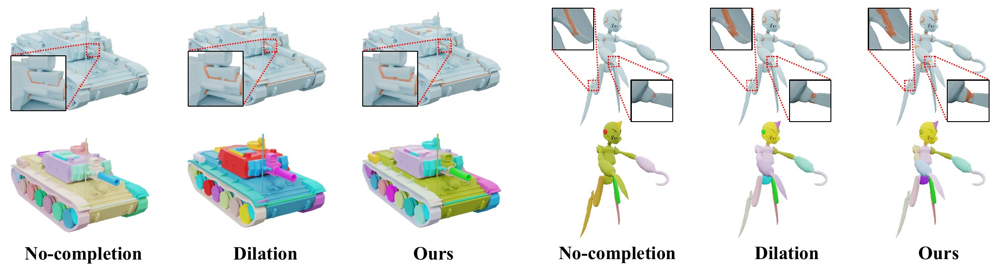
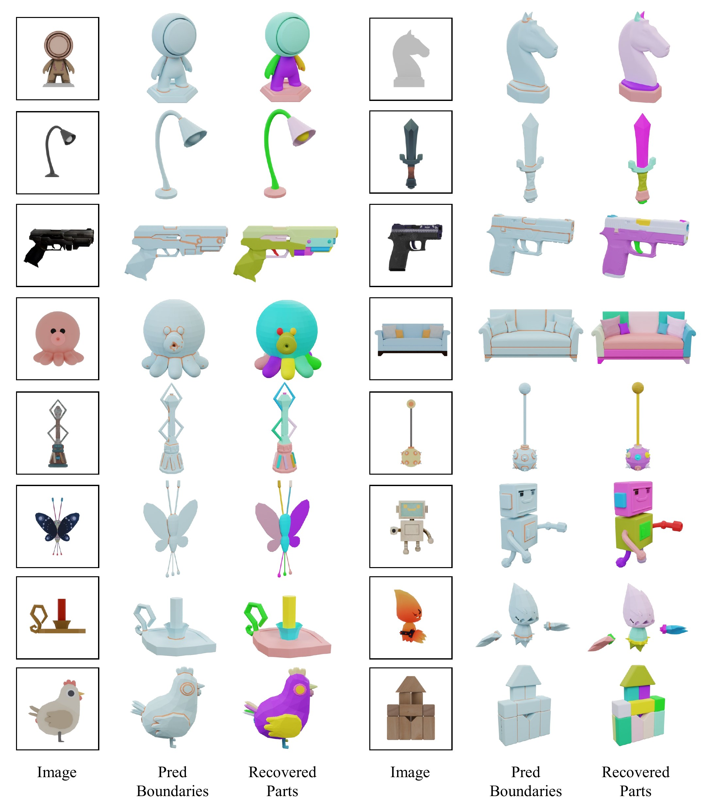

Recent 3D generative models produce high-quality assets but typically treat objects as monolithic shapes. Existing part-aware approaches address this limitation through external segmentation, predefined layouts, or additional planning, leaving shape generation and part discovery largely decoupled. In this work, we propose a native part-aware 3D generation framework that models inter-part separation instead of explicit part assignments. Our key observation is that recovering part structure does not require explicit part assignments over the entire shape; it is sufficient to identify the interfaces where contacting parts should be separated. We therefore cast part decomposition as a local boundary prediction task, replacing open-ended part assignments with simple binary separation cues. To support this formulation, we introduce Seg-Voxel, a sparse voxel representation built upon the voxel design of TRELLIS.2 that jointly encodes geometry and inter-part boundaries. We further develop a native 3D generative pipeline that synthesizes Seg-Voxel to jointly generate object geometry and the separation structure required to partition it into individual components. The predicted boundaries are refined to ensure reliable geometric separation, then reassigned to adjacent components to recover coherent part assets. Experiments demonstrate that our method outperforms existing part-aware approaches in geometric quality, decomposition accuracy, and efficiency, enabling high-quality native part-aware generation without external segmentation or complex post-generation planning.




| Method | CD ↓ | F10.1 ↑ | mCD ↓ | mF10.1 ↑ | Time (s) ↓ |
|---|---|---|---|---|---|
| PartPacker | 0.506 | 94.74 | 5.869 | 71.14 | 23.76 |
| PartCrafter | 0.802 | 90.21 | 7.772 | 63.52 | 104.99 |
| OmniPart | 0.432 | 95.74 | 1.599 | 85.46 | 38.61 |
| XPart | 0.407 | 95.74 | 4.441 | 69.17 | 442.89 |
| SegviGen | 0.203 | 98.13 | 1.796 | 88.35 | 157.75 |
| Seg-Voxel (Ours) | 0.203 | 98.14 | 1.242 | 91.03 | 20.68 |
Evaluated on 300 held-out objects from HY3D-Bench Part. CD / F1 measure the merged whole object; mCD / mF1 measure individual parts with best-match evaluation.

| Method | CD ↓ | F10.01 ↑ | F10.005 ↑ | mCD ↓ | mF10.01 ↑ | mF10.005 ↑ |
|---|---|---|---|---|---|---|
| TRELLIS.2 – 512 | 0.0056 | 95.14 | 65.68 | – | – | – |
| TRELLIS.2 – 1024 | 0.0055 | 95.17 | 65.84 | – | – | – |
| Seg-Voxel – 512 (Ours) | 0.0056 | 95.14 | 65.73 | 0.473 | 84.24 | 75.35 |
| Seg-Voxel – 1024 (Ours) | 0.0055 | 95.17 | 65.87 | 0.456 | 86.73 | 79.12 |
All values ×102. Trained only at resolution 512, Seg-Voxel generalizes directly to 1024 at inference.

| Completion | mCD ↓ | mF10.1 ↑ |
|---|---|---|
| No completion | 1.973 | 87.62 |
| Dilation | 1.328 | 90.55 |
| Ours | 1.242 | 91.03 |
| Assignment | mCD ↓ | mF10.1 ↑ |
|---|---|---|
| N-Copy | 2.281 | 85.27 |
| N-Max | 1.311 | 89.78 |
| Ours | 1.242 | 91.03 |
